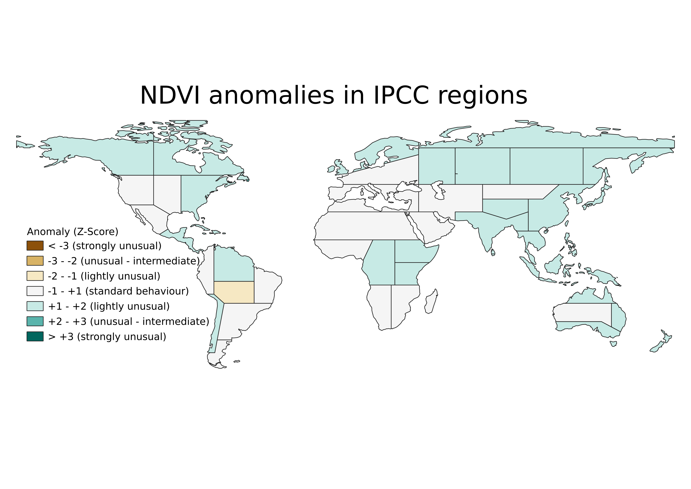

Vegetation greenness - Q3 2024

This dashboard shows the average values and anomalies of greenness, extracted from the CLMS Difference Vegetation Index (NDVI) as a proxy. The results displayed here refer to the period indicated in the title.
Anomalies are calculated with reference to the long term average for the same yearly period; the time series starts in 1999.